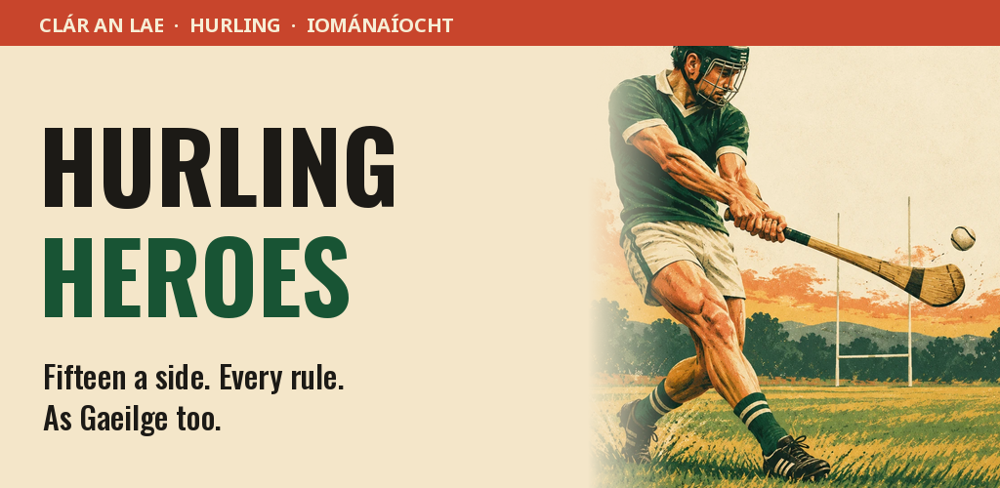
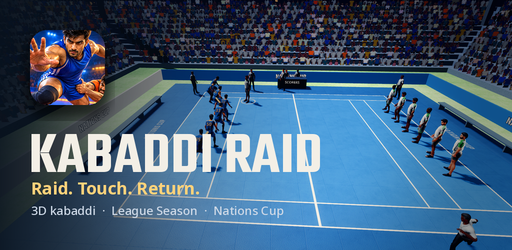
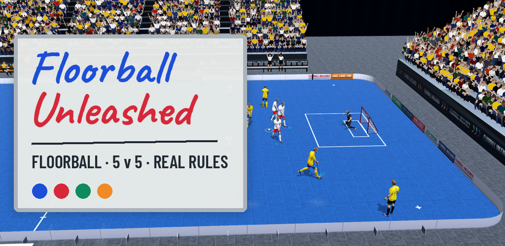
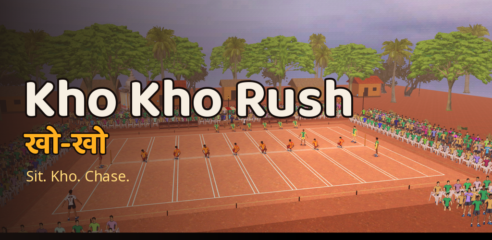
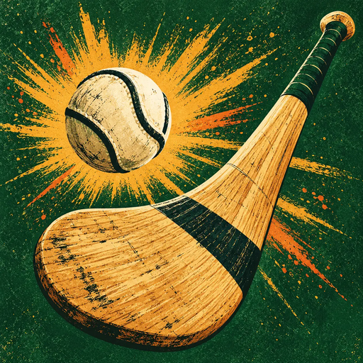

Placeholder thumbnails — real screenshots arrive with the media kit.

Hurling Heroes
The fastest game on grass, fifteen a side and every rule in. Strike the sliotar off the hurley, solo up the field and split the posts under the floodlights — from a parish pitch to a packed stadium.
Features
Frees, 65s, wides and puck-outs called by on-pitch officials.
Ground strokes, sideline cuts and catches built from motion capture.
Sun shadows by day, stadium floodlights at night.
Play a local club pitch or a full championship ground.
Play the whole game in Irish or English.
An optional download with 4K textures and four times the player detail.
About the sport
Hurling is one of the oldest field games in the world, played in Ireland for thousands of years. Two teams of fifteen use the hurley — an ash stick — to strike a small leather ball, the sliotar, over the bar for a point or under it for a goal.